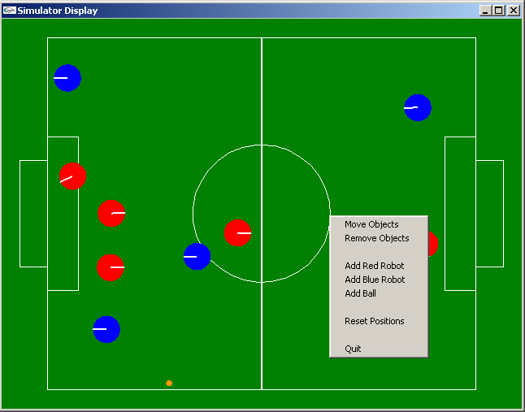

This is an extension to the simulator. It allows users to add , remove, and move robots and ball by a simple click and drag of the mouse. The design is done in OpenGL using the glut library. The executable can be found under robocup-ai-2002\runtime folder\2002SimulatorBinaries\RobocupDisplay.exe or under robocup-sim-2002\criss\Drag n Drop\RobocupDisplayClient\runtime. The source code is under robocup-sim-2002\criss\Drag n Drop\RobocupDisplayClient.

On right clicking on the screen, you will see a menu pop up like the one shown above. You can choose the mode to be " MOVE ROBOT", "REMOVE ROBOT" or "ADD ROBOT". After that left click of mouse will do that action till you change the mode. "RESET POSITIONS" puts the robots in their original default position.